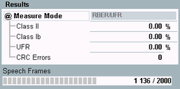

In loop mode D, the MS receiver detects unreliable frames (UFI=1) and bad frames (BFI=1). Bad frames and unreliable frames are declared as erased frames.
The residual bit error ratio (RBER) is defined as the bit error ratio (BER) in frames which have not been declared as erased.
The unreliable frame ratio (UFR) is defined as the ratio of frames declared as erased (BFI=1), or unreliable (UFI=1), to the total number of frames transmitted.
In this context, two measurement results are defined. The RBER characterizes the quality of transmission of the residual frames and the UFR indicates the percentage of unreliable frames.
Please note that this mode is relevant for the half-rate V1 speech frames only.
For background information, see "Test Loops" and "Frame Structure for BER CS Tests".

- Class II / class Ib: Residual bit error rate for class II / class Ib bits
- UFR: Unreliable frame ratio, percentage of erased and unreliable frames (relative to total number of transferred frames)
- CRC errors: Number of speech frames with failed CRC check. The check is performed in the R&S CMW on looped-back speech frames. Bits in frames with CRC error do not contribute to the RBER and UFR results.
- Speech frames: Number of already evaluated speech frames without CRC error and total number of speech frames to be evaluated.